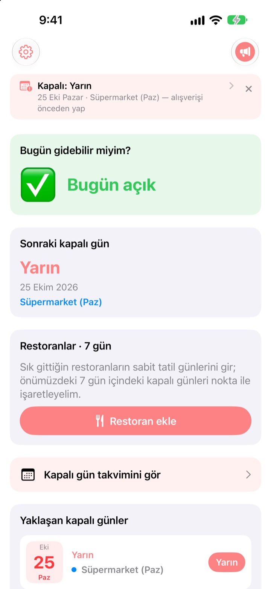
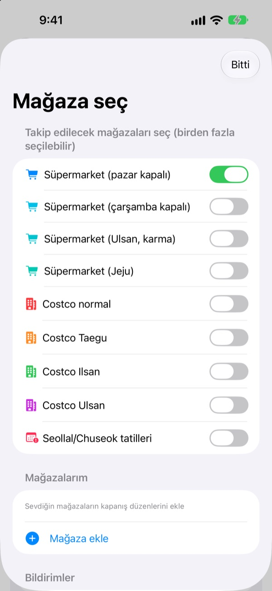
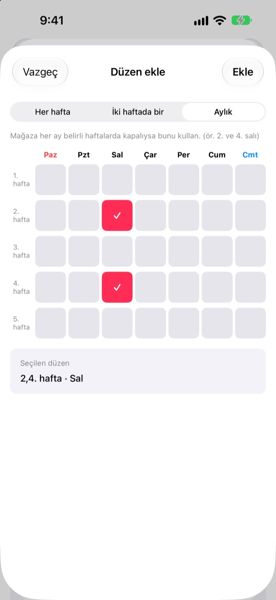
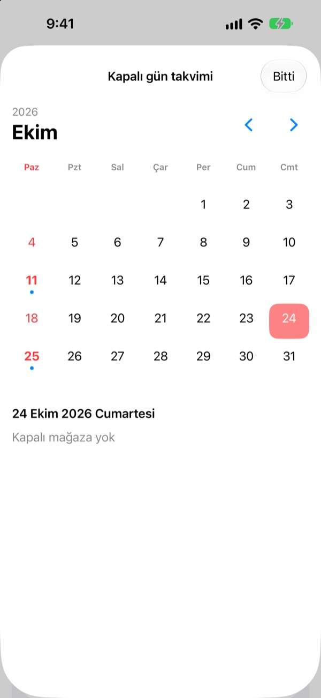
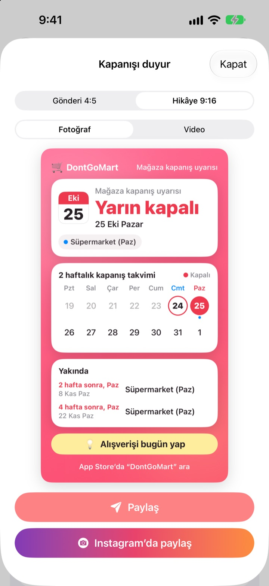

Alışverişe çıkmadan önce
açık olup olmadığına bak
Uygulamayı açınca ilk gördüğün şey, seçtiğin mağazaların bugün açık olup olmadığı. Her kapalı günden önce hatırlatma gelir; bir daha kilitli kapıyla karşılaşmazsın.
Tüm özellikler ücretsiz. Hesap yok, reklam yok.

Kendi mağazanla dene
Bir mağaza seç; bugün açık mı, bir sonraki kapalı gün ne zaman, hemen gör. Uygulamadaki kuralların aynısıyla hesaplanır.
Alışveriş listesiyle gidip kapalı bir mağazaya denk geldin mi?
Kore’de büyük süpermarketler ayda iki gün kapanmak zorunda, ama hangi günler olduğu yere göre değişiyor. Çoğu yerde ayın ikinci ve dördüncü pazarı, bazı yerlerde çarşamba; Ulsan ve Jeju’nun ise kendi kuralları var. Costco’da şubeye göre değişir. DontGoMart kapalı günleri mağazalarının kurallarına göre hesaplar ve önce bugün gidip gidemeyeceğini söyler.
Her bölge için doğru
Pazar ya da çarşamba kapanan mağazaları veya Ulsan ve Jeju gibi kendi takvimi olan bölgeleri seç. Normal Costco şubeleri ile Taegu, Ilsan ve Ulsan şubeleri ayrı ayrı ayarlanır.
Seollal ve Chuseok günündeki kapanışlar da görünür; aynı anda birden fazla mağazayı takip edebilirsin.

Mahalledeki mağazan ve müdavimi olduğun restoranlar
Listede olmayan bir mağazayı kendin ekle: her hafta, iki haftada bir ya da ayın hangi haftaları ve hangi gün kapandığını seçerek.
Restoran için Naver Map’ten paylaşılan bağlantıyı yapıştır ya da bilgi sayfasının ekran görüntüsünü seç; düzenli izin günleri kendiliğinden doldurulur. Fotoğraflardaki yazılar yalnızca cihazında okunur.

Unutmaman için hatırlatmalar ve widget’lar
Seçtiğin saatte 1, 2, 3 ya da 7 gün önceden hatırlatma al; bir gün önce de bugünün alışveriş için iyi bir gün olduğunu hatırlatan bir bildirim daha gelir.
Ana ekran ve kilitli ekran widget’ları en yakın kapalı günü, bu pazar açık olup olmadığını ve restoranlarının önümüzdeki yedi gününü gösterir. Takvim tüm ayı gösterir.

Tek bir kartla paylaş
Haberi iki haftalık takvim ve alışveriş ipucu içeren bir karta dönüştür, aile grubuna gönder. Instagram gönderisi ve hikâyesi boyutları ile kısa video da var.

Üç adımda başla
- 1
Mağazalarını seç
Alışveriş yaptığın mağazaları ve bölgeleri aç. İstediğin kadar.
- 2
Hatırlatmaları aç
Kaç gün önce ve saat kaçta haber verileceğini seç.
- 3
Widget ekle
Uygulamayı açmadan ana ekrandan ya da kilitli ekrandan bak.
Mağazaya göre kapanış kuralları
- Süpermarket (pazar kapalı)
- Ayın 2. ve 4. pazarı · çoğu bölge
- Süpermarket (çarşamba kapalı)
- Ayın 2. ve 4. çarşambası · Gyeonggi’nin bir kısmı, Cheongju
- Süpermarket (Ulsan)
- 2. çarşamba, 4. pazar
- Süpermarket (Jeju)
- 2. cuma, 4. cumartesi
- Costco normal
- Ayın 2. ve 4. pazarı
- Costco Taegu
- Ayın 2. ve 4. pazartesisi · Taegu, Taegu Innovation
- Costco Ilsan
- Ayın 2. ve 4. çarşambası
- Costco Ulsan
- 2. çarşamba, 4. pazar
- Seollal, Chuseok
- bayramın kendisinde kapalı
Zorunlu kapalı günleri yerel yönetimler belirler ve değişebilir. Bir şey tutmuyorsa aşağıdaki adrese yaz.
Sık sorulan sorular
Kapalı günler gerçekle uyuşmuyor.
Zorunlu kapalı günler yerel yönetmeliklere göre belirlenir ve bölgeden bölgeye değişir. Ayarlar’da doğru mağaza türünü (pazar kapalı, çarşamba kapalı, Ulsan, Jeju vb.) seçtiğinden emin ol. Hâlâ tutmuyorsa mağazanın adını ve bölgesini bize yaz, kontrol edelim.
Mağazam listede yok.
Kendi mağazan olarak ekle. Her hafta, iki haftada bir ya da ayın hangi haftaları ve hangi gün kapandığını seç; örneğin ayın ikinci ve dördüncü pazarı.
Bir restoranın izin günleri yanlış doldu.
Naver Map bağlantısıyla içe aktarırken restoranın sayfasında düzenli izin günleri yazmalı. Ekran görüntüsü kullanırken kapanışla ilgili yazının görünmesine dikkat et. Kaydetmeden önce her şeyi düzeltebilirsin.
Hatırlatma gelmiyor.
Ayarlar > Bildirimler > DontGoMart altında bildirimlere izin verildiğini ve uygulama içinde hatırlatmaların açık olduğunu kontrol et.
Widget güncellenmiyor.
Uygulamayı bir kez açınca widget’lar yenilenir. Değişmezse widget’ı kaldırıp yeniden ekle.
Bahşiş nedir?
DontGoMart’ın tüm özellikleri ücretsizdir. Kahve, pasta ve yemek bahşişleri geliştiriciyi desteklemek içindir. Sonrasında bir teşekkür ve kaç kez bahşiş verdiğini gösteren bir rozet görürsün.
Ödeme ya da iade için nereye başvururum?
Uygulama içi satın alımları Apple yürütür; iadeyi reportaproblem.apple.com üzerinden isteyebilirsin. Diğer her şey için bize yaz.
Verilerim nasıl işleniyor?
Hesap, reklam ya da izleme aracı yok; ekran görüntülerindeki yazılar yalnızca cihazında okunur. Ayrıntılar aşağıdaki Gizlilik Politikası’nda.
Soruların ya da fikirlerin mi var? hyunho.lee.1993@gmail.com adresine yaz. Genellikle bir iki gün içinde yanıt veririz.